먼저 생각해 보세요.
Die Jacke gefällt mir. 이 문장에서 mir는 무슨 뜻일까요?
gefallen은 '~에게 마음에 들다'라는 뜻이에요. mir는 '나에게', dir는 '너에게'예요.
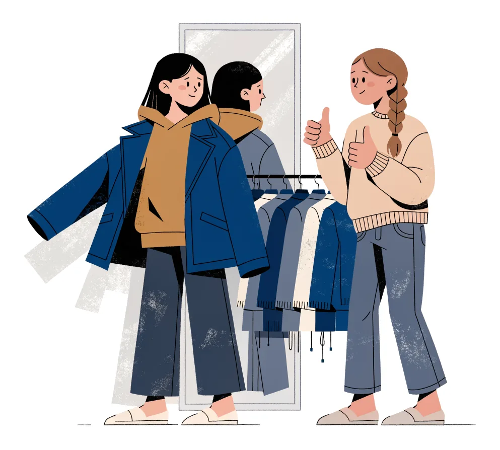
쾰른은 점점 추워져요. Yuna는 겨울 재킷을 사러 Emma와 시내에 나왔어요.
눌러서 들어 보세요.
먼저 생각해 보세요.
Die Jacke gefällt mir. 이 문장에서 mir는 무슨 뜻일까요?
gefallen은 '~에게 마음에 들다'라는 뜻이에요. mir는 '나에게', dir는 '너에게'예요.
Lektion 3의 낱말 다섯 개를 다시 떠올려 보세요.
문법 ihn, sie, es (Akkusativ), gefallen, stehen + Dativ (mir, dir), welcher? – dieser
이 과를 마치면 옷을 고르고, 마음에 드는지, 어울리는지 독일어로 말할 수 있어요.
토요일 오후, 백화점의 옷 매장이에요.
들으면서 찾아보세요. Yuna는 어떤 색 재킷을 고르나요?
같은 백화점이에요. Lukas가 점원에게 스웨터를 물어봐요.
들으면서 찾아보세요. Lukas는 어떤 스웨터를 사나요?
두 대화를 듣고 답하세요.
Yuna는 어떤 색 재킷을 고르나요?
Rot gefällt Yuna.
Rot gefällt mir nicht.
Was kostet die Jacke?
Yuna findet die Jacke zu teuer.
Das ist nicht zu teuer. Ich nehme sie!
Lukas가 처음 입어 본 스웨터는 어땠나요?
Lukas는 무엇을 사나요?
낱말 25개예요. 낱말이나 예문 앞의 단추를 누르면 소리가 나요. 명사는 der, die, das를 색으로 구분했어요.
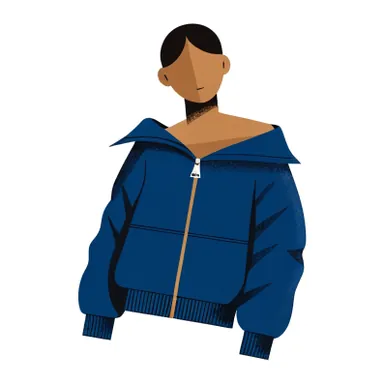
die Jacke, die Jacken 재킷, 점퍼
Die Jacke ist warm.그 재킷은 따뜻해요.
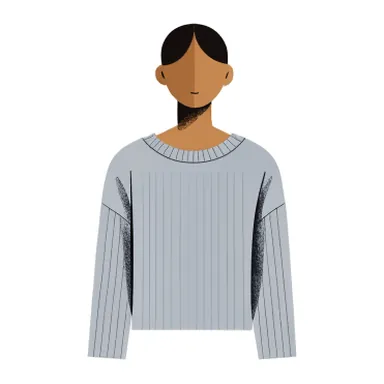
der Pullover, die Pullover 스웨터
Ich suche einen Pullover.스웨터를 찾고 있어요.
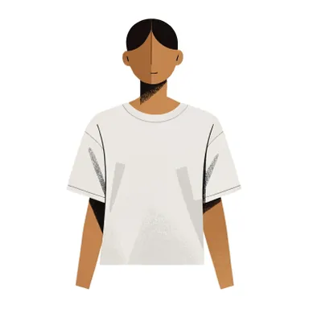
das T-Shirt, die T-Shirts 티셔츠
Das T-Shirt ist neu.그 티셔츠는 새것이에요.
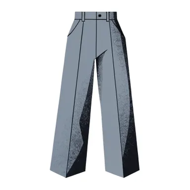
die Hose, die Hosen 바지
Die Hose passt mir nicht.그 바지는 나한테 안 맞아요.
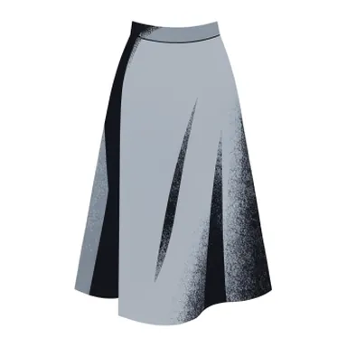
der Rock, die Röcke 치마
Der Rock ist zu klein.그 치마는 너무 작아요.
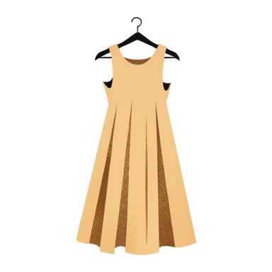
das Kleid, die Kleider 원피스
Das Kleid ist schön.그 원피스는 예뻐요.
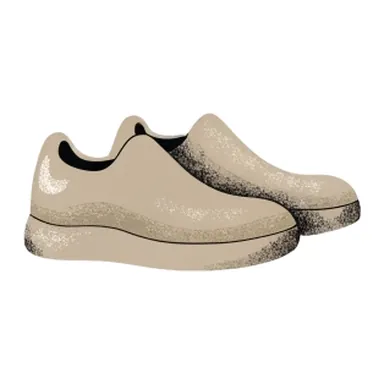
der Schuh, die Schuhe 신발
Die Schuhe sind neu.그 신발은 새것이에요.
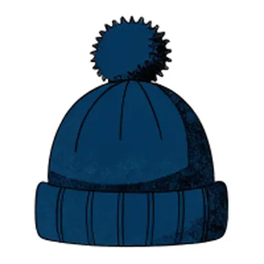
die Mütze, die Mützen 털모자, 비니
Die Mütze ist warm.그 모자는 따뜻해요.
die Farbe, die Farben 색
Welche Farbe gefällt dir?어떤 색이 마음에 들어?
rot 빨간
Die Jacke ist rot.그 재킷은 빨간색이에요.
blau 파란
Blau gefällt mir.파란색이 마음에 들어요.
grün 초록의
Dieser Pullover ist grün.이 스웨터는 초록색이에요.
gelb 노란
Die Mütze ist gelb.그 모자는 노란색이에요.
schwarz 검은
Die Hose ist schwarz.그 바지는 검은색이에요.
weiß 흰
Das T-Shirt ist weiß.그 티셔츠는 흰색이에요.
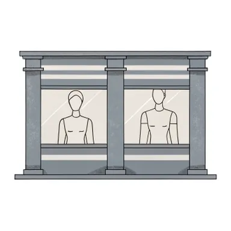
das Kaufhaus, die Kaufhäuser 백화점
Wir gehen ins Kaufhaus.우리는 백화점에 가요.
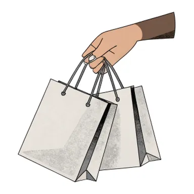
kaufen 사다
Ich kaufe das T-Shirt.나는 그 티셔츠를 사요.
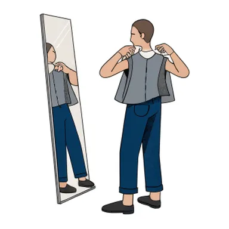
anprobieren 입어 보다, 신어 보다
Ich probiere die Jacke an.나는 재킷을 입어 봐요.
gefallen (du gefällst, er gefällt) 마음에 들다
Die Jacke gefällt mir.그 재킷은 내 마음에 들어요.
Das steht dir! 너한테 어울려!
Der Pullover ist toll. Das steht dir!그 스웨터 멋지다. 너한테 어울려!
passen (크기가) 맞다
Der Pullover passt.스웨터가 맞아요.
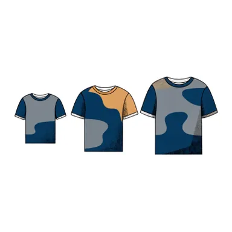
die Größe, die Größen 크기, 치수
Welche Größe hast du?치수가 어떻게 돼?
teuer 비싼
Das ist zu teuer.그건 너무 비싸요.
günstig 값이 싼
Die Schuhe sind günstig.그 신발은 값이 싸요.
warm 따뜻한
Die Jacke ist sehr warm.그 재킷은 아주 따뜻해요.
이 과의 낱말로 여덟 문제를 풀어요.
예문을 보고 답해 보세요.
der Pullover를 '그것을'이라고 다시 말할 때 쓴 말은 무엇인가요?
규칙
앞에서 말한 물건을 '그것을'이라고 다시 말할 때 der 명사는 ihn, die 명사는 sie, das 명사는 es, 복수는 sie로 받아요. der 명사만 er에서 ihn으로 모양이 바뀌어요.
| der Pullover | das T-Shirt | die Jacke | die Schuhe | |
|---|---|---|---|---|
| 그것은 | Er ist schön. | Es ist schön. | Sie ist schön. | Sie sind schön. |
| 그것을 | Ich nehme ihn. | Ich nehme es. | Ich nehme sie. | Ich nehme sie. |
주의 einen, den, keinen처럼 der 명사는 4격에서 n으로 끝났죠. ihn도 n으로 끝나요.
예문을 보고 답해 보세요.
Die Jacke gefällt mir. 이 문장의 주어는 무엇인가요?
규칙
gefallen, stehen, passen은 물건이 주어예요. 누구에게 그런지는 mir(나에게), dir(너에게)로 말해요. 물건이 여러 개면 동사가 gefallen, stehen, passen이 돼요.
| 하나일 때 | 여러 개일 때 | |
|---|---|---|
| 마음에 들다 | Die Jacke gefällt mir. | Die Schuhe gefallen mir. |
| 어울리다 | Der Pullover steht dir. | Die Schuhe stehen dir. |
| 맞다 | Die Hose passt mir. | Die Schuhe passen mir. |
주의 '나는 그 재킷이 마음에 들어'를 Ich로 시작하면 안 돼요. 마음에 드는 물건으로 문장을 시작해요. Die Jacke gefällt mir.
예문을 보고 답해 보세요.
die Jacke 앞에서 welch-와 dies-는 어떤 글자로 끝나나요?
규칙
welch-(어떤, 어느)와 dies-(이)는 der, die, das의 마지막 글자를 따라가요. der 명사 앞에서는 -er, das 명사 앞에서는 -es, die 명사와 복수 앞에서는 -e예요.
| der Pullover | das T-Shirt | die Jacke | die Schuhe | |
|---|---|---|---|---|
| 어떤? | welcher Pullover? | welches T-Shirt? | welche Jacke? | welche Schuhe? |
| 이 | dieser Pullover | dieses T-Shirt | diese Jacke | diese Schuhe |
주의 색을 물을 때는 Welche Farbe?라고 해요. 대답은 Rot. Blau. 처럼 색 이름만 말해도 돼요.
Elif가 신발을 사요. 듣고 답하세요.
Neue Schuhe
Elif Entschuldigung, ich suche Schuhe.
Frau Gern. Welche Größe hast du?
Elif Größe achtunddreißig.
Frau Diese Schuhe hier sind weiß und diese sind schwarz.
Elif Weiß gefällt mir. Was kosten die Schuhe?
Frau Fünfundvierzig Euro.
Elif Das ist günstig. Ich nehme sie!
Elif는 무엇을 사려고 하나요?
Welche Größe hat Elif?
Elif는 어떤 색이 마음에 드나요?
Was kosten die Schuhe?
듣고 옷의 색을 고르세요.
바지는 무슨 색인가요?
Die Hose ist schwarz.
티셔츠는 무슨 색인가요?
Mein T-Shirt ist grün.
모자는 무슨 색인가요?
Die Mütze ist gelb.
원피스는 무슨 색인가요?
Das Kleid ist rot.
백화점 광고를 읽고 답하세요.
Winter im Kaufhaus
Diese Woche im Kaufhaus: Jacken, Pullover und Mützen!
Jacken: 59 Euro. Die Jacken sind warm. Es gibt sie in Blau, Rot und Schwarz.
Pullover: 25 Euro. Mützen: nur 9 Euro!
Am Samstag kosten T-Shirts nur 5 Euro.
Am Sonntag ist das Kaufhaus nicht offen.
Die Jacken gibt es in Grün.
Es gibt sie in Blau, Rot und Schwarz.
Was kostet eine Mütze?
Wann kosten T-Shirts nur 5 Euro?
일요일에 이 백화점에서 옷을 살 수 있나요?
Am Sonntag ist das Kaufhaus nicht offen. offen은 '열려 있는'이라는 뜻이에요.
ihn, sie, es 가운데 알맞은 말을 고르세요.
Der Pullover ist schön. Ich nehme .
Die Jacke ist warm. Ich kaufe .
Das T-Shirt ist toll. Ich probiere an.
Die Schuhe sind neu. Wie findest du ?
Der Rock ist zu klein. Ich nehme nicht.
Das Kleid ist rot. Emma findet schön.
주어에 맞는 동사 형태를 고르세요.
Die Jacke mir.
Die Schuhe mir nicht.
Der Pullover dir gut.
Die Hose mir nicht.
Wie dir das Kleid?
Die Mützen mir sehr.
welch-와 dies-의 알맞은 형태를 고르세요.
Jacke gefällt dir?
Pullover ist zu teuer.
T-Shirt nimmst du?
Schuhe sind neu.
Rock steht mir?
Kleid ist rot.
색 이름과 뜻을 짝지으세요.
낱말을 순서대로 눌러 문장을 만드세요.
그 재킷은 내 마음에 들어.
그 스웨터는 너한테 잘 어울려.
입어 봐도 돼요?
치수가 어떻게 돼?
듣고 그대로 써 보세요.
Die Jacke steht dir. 그 재킷 너한테 어울려.
Blau gefällt mir. 파란색이 마음에 들어.
Ich suche einen Pullover. 스웨터를 찾고 있어요.
Ich suche einen Pullover. 스웨터를 찾고 있어요.
Kann ich die Jacke anprobieren? 이 재킷 입어 봐도 돼요?
Haben Sie die Hose auch in M? 이 바지 M 사이즈도 있어요?
Was kostet das? 얼마예요?
Die Jacke gefällt mir. 그 재킷 마음에 들어.
Die Schuhe gefallen mir nicht. 그 신발은 마음에 안 들어.
Das steht dir! 너한테 어울려!
Der Pullover ist zu klein. / Er ist zu groß. 스웨터가 너무 작아요. / 너무 커요.
Das ist zu teuer. 너무 비싸요.
Ich nehme ihn. / Ich nehme sie. / Ich nehme es. 이걸로 할게요.
대화 B에서 역할을 하나 고르세요. 상대의 말은 음성으로 나오고, 내 차례에는 직접 말해요.
오늘 입은 옷과 그 색, 마음에 드는 색, 사고 싶은 옷을 적으세요. 완성된 문장을 소리 내어 읽어 보세요.
Mein Pullover ist blau.
Schwarz gefällt mir.
Ich möchte eine Jacke kaufen.
Schau mal!
가게나 온라인에서 본 옷 하나를 친구에게 메시지로 알려 주세요. 무슨 옷인지, 색과 값, 마음에 드는지 써요.
Schau mal! Diese Jacke ist blau und sehr warm. Sie kostet 59 Euro. Das ist nicht zu teuer. Die Jacke gefällt mir. Ich probiere sie an. Vielleicht kaufe ich sie!
다 쓴 뒤에 확인해 보세요.
Ich kann im Geschäft nach Kleidung fragen.가게에서 옷에 대해 물을 수 있어요.
Ich kann sagen, was mir gefällt.무엇이 마음에 드는지 말할 수 있어요.
Ich kann über Farbe, Größe und Preis sprechen.색, 크기, 값을 말할 수 있어요.